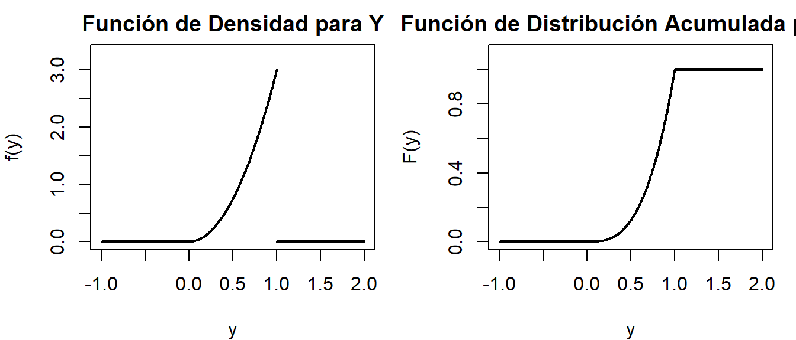

Variable Aleatoria
Variable aleatoria
Cuando se realiza un determinado experimento, y se asocian los resultados obtenidos a un número real, se está definiendo una función cuyo dominio es el espacio muestral \(\Omega\) y codominio al conjunto de los números reales; a esta función se le llama variable aleatoria.
Sea \(\Omega\) el espacio muestral asociado a un experimento aleatorio, entonces cada \(\omega \in \Omega\) especifica un resultado del experimento. Si \(X\) se define como una variable aleatoria, entonces cada resultado especificará el valor que toma esta variable aleatoria.
Definición. (Variable aleatoria)
Sea \((\Omega, \mathcal{A}, P)\) un espacio de probabilidad, se define una variable aleatoria \(X\) como una función con dominio \(\Omega\) y codominio al conjunto \(\mathbb{R}\); es decir, \(X: \Omega \to \mathbb{R}\).
Se dice que la variable \(X\) es aleatoria debido a que involucra la probabilidad de los resultados del espacio muestral \(\Omega\), y esta es una función definida sobre dicho espacio muestral, de manera que transforma a todos los posibles resultados de \(\Omega\) en cantidades numéricas.
Variable aleatoria
¿Qué diferencia una v.a. de un evento?
Una variable aleatoria es una función que asigna un número real a cada resultado posible de un experimento aleatorio. Por ejemplo, si se lanza un dado, la variable aleatoria podría ser el número que aparece en la cara superior. En contraste, un evento es un conjunto de resultados posibles de un experimento aleatorio. Por ejemplo, en el lanzamiento de un dado, el evento “obtener un número par” incluiría los resultados 2, 4 y 6.
Entonces, mientras que una variable aleatoria asigna números a resultados individuales, un evento es una colección de resultados que comparten una característica común.
Variable aleatoria
Para ilustrar lo anterior, considere el experimento de lanzar dos monedas equilibradas. El espacio muestral está conformado por cuatro posibles resultados, los cuales son \(\Omega = \{CC, EE, EC, CE\}\). Sea \(X\): el número observado de coronas al realizar el experimento, entonces \(X(CC) = 2\), \(X(EE) = 0\), \(X(EC) = 1\) y \(X(CE) = 1\); de esta manera, se han transformado los cuatro posibles resultados del espacio muestral en puntos sobre la recta de los reales. Es decir:
\[X(w) = \begin{cases} 0 & \text{si } w = \{EE\} \\ 1 & \text{si } w = \{EC, CE\} \\ 2 & \text{si } w = \{CC\} \end{cases}\] 
Variable aleatoria
Ahora, \(P(X = 0)\) se entenderá como la probabilidad de que la variable aleatoria \(X\) tome el valor cero, es decir, la probabilidad de que no se obtenga una corona. Si se supone que todos los eventos del espacio muestral son igualmente probables, entonces:
\[P(X = 0) = P(\{EE\}) = \frac{1}{4}\]
La probabilidad de obtener una corona es \(P(X = 1) = P(\{CE\}) + P(\{EC\}) = \dfrac{1}{2}\), y la probabilidad de obtener dos coronas es \(P(X = 2) = P(\{CC\}) = \dfrac{1}{4}\).
Variable aleatoria
Definición. (Conjunto numerable)
Un conjunto es numerable si es finito, es decir, sus elementos se pueden enumerar. O bien, infinitamente numerable si se pueden hacer corresponder sus elementos uno a uno con el conjunto de números naturales.
La definición anterior indica que un conjunto es numerable si existe una función inyectiva de él a los números naturales; esto significa que cada elemento del conjunto está asociado a un único número natural, o que los elementos del conjunto pueden enumerarse uno a la vez, aunque la cuenta puede no terminar nunca debido a la infinidad de elementos.
Definición. (Variable aleatoria discreta)
Si el rango de una variable aleatoria \(X\) es numerable, entonces \(X\) es una variable aleatoria discreta.
Variable aleatoria
Ejemplo.
Las siguientes variables aleatorias son discretas:
Seleccionar diez estudiantes de un grupo y aplicarles un examen corto sorpresa; la variable aleatoria \(X\) es: número de estudiantes que aprueban el examen.
Observar en una estación de peaje y definir la variable aleatoria \(Z\) como: el número de vehículos que pasan por la estación de peaje en un periodo de una hora.
Variable aleatoria
Como se mencionó anteriormente, \(P(X = x)\) se entenderá como la probabilidad de que la variable aleatoria tome un valor específico \(x\) del rango \(R_X\). A medida que varía \(x\), la probabilidad anterior cambia; entonces \(P(X = x)\) se entiende como una función de \(x\).
La función de probabilidad proporciona la distribución de probabilidades de los posibles resultados de un experimento o evento aleatorio. Esta función permite calcular la probabilidad de eventos específicos, determinar la esperanza matemática y realizar diversas operaciones estadísticas.
Definición. (Función de probabilidad)
Sea \(X\) una variable aleatoria discreta con espacio muestral \(\Omega\), sea \(P\) una probabilidad sobre \(\Omega\). La función \(f_X: R_X \to \mathbb{R}\), definida como:
\[f_X(x) = P(X = x)\]
recibe el nombre de función de probabilidad o distribución de probabilidad.
Variable aleatoria
Si se tienen dos eventos disjuntos \(X = a\) y \(X = b\), entonces:
\[P(X = a \cup X = b) = P(X = a) + P(X = b)\]
También, es importante definir el evento \(X \leq a\), de modo que:
\[P(X \leq a) = P(X < a \cup X = a) = P(X < a) + P(X = a)\]
Así, por ejemplo, si una variable aleatoria toma valores entre \(\{0, 1, 2, 3\}\), entonces:
\[P(X \leq 2) = P(X < 2 \cup X = 2) = P(X = 0) + P(X = 1) + P(X = 2)\]
Mientras que:
\[P(X < 2) = P(X = 0) + P(X = 1)\]
Variable aleatoria
Ejemplo. Considere el experimento que consiste en lanzar tres veces una moneda equilibrada al aire. Se define la variable aleatoria \(X\): número de escudos obtenidos; entonces el espacio muestral es \(\Omega = \{CCC, CCE, CEC, ECC, EEC, ECE, CEE, EEE\}\), y \(X\) puede asumir los valores 0, 1, 2 y 3. Estos valores se asocian con probabilidades de la siguiente manera:
\[P(X = 0) = P(\{C,C,C\}) = \frac{1}{8}\] \[P(X = 1) = P(\{C,C,E\} \cup \{C,E,C\} \cup \{E,C,C\}) = \frac{1}{8} + \frac{1}{8} + \frac{1}{8} = \frac{3}{8}\] \[P(X = 2) = P(\{E,E,C\} \cup \{E,C,E\} \cup \{C,E,E\}) = \frac{1}{8} + \frac{1}{8} + \frac{1}{8} = \frac{3}{8}\] \[P(X = 3) = P(\{E,E,E\}) = \frac{1}{8}\]
Variable aleatoria
Por lo tanto, la función de probabilidad es:
\[P(X = x) = \begin{cases} 1/8 & \text{si } x = 0 \\ 3/8 & \text{si } x = 1 \\ 3/8 & \text{si } x = 2 \\ 1/8 & \text{si } x = 3 \end{cases}\]
La gráfica de esta función de probabilidad queda como se ilustra en la figura.

Variable aleatoria
Si se quiere determinar la probabilidad de obtener al menos un escudo, es decir \(P(X \geq 1)\), se debe realizar lo siguiente:
\[P(X \geq 1) = P(X = 1) + P(X = 2) + P(X = 3) = \frac{3}{8} + \frac{3}{8} + \frac{1}{8} = \frac{7}{8}\]
Esta última probabilidad se puede obtener mediante la probabilidad del complemento, es decir:
\[P(X \geq 1) = 1 - P(X < 1) = 1 - P(X = 0) = 1 - \frac{1}{8} = \frac{7}{8}\]
Si se quiere determinar la probabilidad de obtener a lo sumo un escudo, es decir \(P(X \leq 1)\), se debe realizar lo siguiente:
\[P(X \leq 1) = P(X = 0) + P(X = 1) = \frac{1}{8} + \frac{3}{8} = \frac{4}{8} = \frac{1}{2}\]
Función de probabilidad
Teorema. (Propiedades de la función de probabilidad)
Una función \(f_X: R_X \to \mathbb{R}\) es una función de probabilidad de una variable aleatoria \(X\) si y solo si se cumple con las siguientes propiedades:
\(f_X(x) = P(X = x) \geq 0, \quad \forall x \in R_X\)
\(\displaystyle\sum_{x \in R_X} f_X(x) = 1\)
Para la primera condición, es evidente que \(P(X = x) \geq 0\) por ser una probabilidad. En el caso de la segunda propiedad:
\[\sum_{x \in R_X} f_X(x) = \sum_{x \in R_X} P(X = x) = P\!\left(\bigcup_{x \in R_X} (X = x)\right) = P(\Omega) = 1\]
Función de probabilidad
Así, en el caso del ejemplo anterior, se verifica que \(P(X = x) \geq 0, \; \forall x \in R_X\) y que, además:
\[\sum_{x \in R_X} f_X(x) = \frac{1}{8} + \frac{3}{8} + \frac{3}{8} + \frac{1}{8} = 1\]
Por lo que, la función obtenida en ese ejemplo es una función de probabilidad.
\[P(X = x) = \begin{cases} 1/8 & \text{si } x = 0 \\ 3/8 & \text{si } x = 1 \\ 3/8 & \text{si } x = 2 \\ 1/8 & \text{si } x = 3 \end{cases}\]
Función de distribución acumulada
El caso de ir acumulando las probabilidades ya hemos estudiado cuando determinamos la probabilidad de ocurrencia de los eventos del tipo \(\{X \leq x\}\). La función de distribución acumulada de probabilidad se define de la siguiente forma:
Definición. (Función de distribución acumulada)
Sea \(X\) una variable aleatoria con función de probabilidad \(f_X\). A la función definida en \(F_X(x): \mathbb{R} \to \mathbb{R}\), dada por:
\[F_X(x) = P(X \leq x) = \sum_{\substack{k \in R_X \\ k \leq x}} P(X = k)\]
se le llama función de distribución acumulada de \(X\).
Función de distribución acumulada
Además, si \(X\) solo toma un número finito de valores \(x_1, x_2, \ldots, x_n\), entonces la función de distribución está dada por:
\[F_X(x) = \begin{cases} 0 & \text{si } x < x_1 \\ f(x_1) & \text{si } x_1 \leq x < x_2 \\ f(x_1) + f(x_2) & \text{si } x_2 \leq x < x_3 \\ \vdots & \vdots \\ f(x_1) + \cdots + f(x_n) = 1 & \text{si } x \geq x_n \end{cases}\]
Función de distribución acumulada
Ejemplo. En el experimento de lanzar tres monedas, se definió la variable aleatoria \(X\) como el número de escudos obtenidos. La función de distribución acumulada de \(X\) es en trozos:
- Si \(x < 0\), entonces \(F_X(x) = 0\).
- Si \(0 \leq x < 1\), entonces \(F_X(x) = f_X(0) = \dfrac{1}{8}\).
- Si \(1 \leq x < 2\), entonces \(F_X(x) = f_X(0) + f_X(1) = \dfrac{1}{8} + \dfrac{3}{8} = \dfrac{1}{2}\).
- Si \(2 \leq x < 3\), entonces \(F_X(x) = f_X(0) + f_X(1) + f_X(2) = \dfrac{1}{8} + \dfrac{3}{8} + \dfrac{3}{8} = \dfrac{7}{8}\).
- Si \(x \geq 3\), entonces \(F_X(x) = \dfrac{1}{8} + \dfrac{3}{8} + \dfrac{3}{8} + \dfrac{1}{8} = 1\).
Función de distribución acumulada
La gráfica de la función de distribución acumulada de probabilidad de la variable aleatoria \(X\) se representa en la figura.
\[F_X(x) = \begin{cases} 0 & \text{si } x < 0 \\ 1/8 & \text{si } 0 \leq x < 1 \\ 1/2 & \text{si } 1 \leq x < 2 \\ 7/8 & \text{si } 2 \leq x < 3 \\ 1 & \text{si } x \geq 3 \end{cases}\] 
Función de distribución acumulada
Ejemplo.
Considere el experimento de lanzar dos dados balanceados, sea \(X\) la variable aleatoria que representa la suma de los resultados obtenidos.
| Resultado | \(X = x\) | N.° ocurrencias | Prob. asociada |
|---|---|---|---|
| \((1,1)\) | 2 | 1 | 1/36 |
| \((1,2),(2,1)\) | 3 | 2 | 2/36 |
| \((1,3),(2,2),(3,1)\) | 4 | 3 | 3/36 |
| \((1,4),(2,3),(3,2),(4,1)\) | 5 | 4 | 4/36 |
| \((1,5),(2,4),(3,3),(4,2),(5,1)\) | 6 | 5 | 5/36 |
| \((1,6),(2,5),(3,4),(4,3),(5,2),(6,1)\) | 7 | 6 | 6/36 |
| \((2,6),(3,5),(4,4),(5,3),(6,2)\) | 8 | 5 | 5/36 |
| \((3,6),(4,5),(5,4),(6,3)\) | 9 | 4 | 4/36 |
| \((4,6),(5,5),(6,4)\) | 10 | 3 | 3/36 |
| \((5,6),(6,5)\) | 11 | 2 | 2/36 |
| \((6,6)\) | 12 | 1 | 1/36 |
Función de distribución acumulada
Con base en lo anterior, la función de probabilidad y la función de distribución acumulada son, respectivamente:
\[P(X = x) = \begin{cases} 1/36 & \text{si } x \in \{2,12\} \\ 2/36 & \text{si } x \in \{3,11\} \\ 3/36 & \text{si } x \in \{4,10\} \\ 4/36 & \text{si } x \in \{5,9\} \\ 5/36 & \text{si } x \in \{6,8\} \\ 6/36 & \text{si } x = 7 \end{cases} \qquad F_X(x) = \begin{cases} 0 & \text{si } x < 2 \\ 1/36 & \text{si } 2 \leq x < 3 \\ 1/12 & \text{si } 3 \leq x < 4 \\ 1/6 & \text{si } 4 \leq x < 5 \\ 5/18 & \text{si } 5 \leq x < 6 \\ 5/12 & \text{si } 6 \leq x < 7 \\ 7/12 & \text{si } 7 \leq x < 8 \\ 13/18 & \text{si } 8 \leq x < 9 \\ 5/6 & \text{si } 9 \leq x < 10 \\ 11/12 & \text{si } 10 \leq x < 11 \\ 35/36 & \text{si } 11 \leq x < 12 \\ 1 & \text{si } x \geq 12 \end{cases}\]
Función de distribución acumulada
Ejemplo.
Se selecciona una muestra aleatoria de 3 personas del padrón de votantes de la última elección. Sea \(X\) el número de personas que votaron por el partido Acción Ciudadana (PAC). Suponga que la probabilidad de que una persona del padrón vote por el PAC es de \(0.40\); además, suponga que la selección de los tres votantes son pruebas independientes.
Función de distribución acumulada
Solución: Aquí \(X: \Omega \to \{0,1,2,3\}\), vota PAC \((p = 0.4)\), no vota PAC \((q = 0.6)\). Donde
\[\Omega = \{(0,0,0),(1,0,0),(0,1,0),(0,0,1),(1,1,0),(0,1,1),(1,0,1),(1,1,1)\}\]
\[X = 0 \Rightarrow P(X = 0) = 0.6 \times 0.6 \times 0.6 = 0.216\] \[X = 1 \Rightarrow P(X = 1) = 3 \times 0.6 \times 0.6 \times 0.4 = 0.432\] \[X = 2 \Rightarrow P(X = 2) = 3 \times 0.6 \times 0.4 \times 0.4 = 0.288\] \[X = 3 \Rightarrow P(X = 3) = 0.4 \times 0.4 \times 0.4 = 0.064\]
\[f_X(x) = \begin{cases} 0.216 & x = 0 \\ 0.432 & x = 1 \\ 0.288 & x = 2 \\ 0.064 & x = 3 \end{cases} \qquad F_X(x) = \begin{cases} 0 & x < 0 \\ 0.216 & 0 \leq x < 1 \\ 0.648 & 1 \leq x < 2 \\ 0.936 & 2 \leq x < 3 \\ 1 & x \geq 3 \end{cases}\]
Función de distribución acumulada
Ejemplo.
Se sabe que de un grupo de cuatro componentes electrónicos dos son defectuosos. Un inspector prueba los componentes uno por uno hasta encontrar los dos componentes en mal estado; una vez que el inspector encuentre el segundo componente defectuoso las pruebas concluyen. Sea \(X\) el número de pruebas realizadas hasta encontrar el segundo componente defectuoso.
Establezca una distribución de probabilidad y distribución acumulada para la variable \(X\).
Función de distribución acumulada
Solución: Aquí \(X: \Omega \to \{2, 3, 4\}\),
\[\Omega = \{(1,1),(0,1,1),(1,0,1),(0,0,1,1),(0,1,0,1),(1,0,0,1)\}\]
\[X = 2 \Rightarrow P(X = 2) = \frac{1}{6}\] \[X = 3 \Rightarrow P(X = 3) = \frac{2}{6} = \frac{1}{3}\] \[X = 4 \Rightarrow P(X = 4) = \frac{3}{6} = \frac{1}{2}\]
\[f_X(x) = \begin{cases} 1/6 & x = 2 \\ 1/3 & x = 3 \\ 1/2 & x = 4 \end{cases} \qquad F_X(x) = \begin{cases} 0 & x < 2 \\ 1/6 & 2 \leq x < 3 \\ 1/2 & 3 \leq x < 4 \\ 1 & x \geq 4 \end{cases}\]
Función de distribución acumulada
Teorema. (Propiedades de la función de distribución acumulada)
Sea \(X\) una variable aleatoria discreta con función de distribución acumulada \(F_X\). Entonces, esta función cumple con las siguientes propiedades:
- \(F_X(x) \geq 0, \quad \forall x \in \mathbb{R}\).
- Si \(x \leq y\), entonces \(F_X(x) \leq F_X(y)\) (es creciente).
- \(P(X > x) = 1 - F_X(x), \quad \forall x \in \mathbb{R}\).
- \(P(a < X \leq b) = F_X(b) - F_X(a)\) para cualesquiera \(a\) y \(b\) reales tales que \(a < b\).
- \(\displaystyle\lim_{x \to -\infty} F_X(x) = 0\) y \(\displaystyle\lim_{x \to \infty} F_X(x) = 1\).
Función de distribución acumulada
Definición. (Función de densidad discreta) Sea \(X\) una variable aleatoria discreta que toma los valores \(x_1, x_2, x_3, \ldots\) tales que \(x_i \neq x_j\) para todo \(i \neq j\). A la función \(f_X\) sobre \(\mathbb{R}\) definida por:
\[f_X(x) = \begin{cases} P(X = x_i), & x \in \{x_1, x_2, \ldots\} \\ 0, & \text{en otro caso} \end{cases}\]
se le llama función de densidad de la variable aleatoria discreta \(X\).
Ejemplo. En un experimento donde se lanza un dado equilibrado una vez, se define \(X\) como la variable aleatoria que indica el resultado obtenido. Los posibles valores de \(X\) son \(1, 2, \ldots, 6\). La función de densidad de \(X\) está dada por:
\[f_X(x) = \begin{cases} \dfrac{1}{6}, & x \in \{1, 2, \ldots, 6\} \\ 0, & \text{en otro caso} \end{cases}\]
Valor esperado
Definición. (Esperanza o valor esperado) Sea \(X\) una variable aleatoria discreta con función de probabilidad \(f_X\), tal que \(\displaystyle\sum_{x_i \in R_X} |x_i|\, f_X(x_i)\) es absolutamente convergente, entonces se define la esperanza o valor esperado de \(X\) por:
\[E(X) = \sum_{x_i \in R_X} x_i\, f_X(x_i) = \sum_{x_i \in R_X} x_i\, P(X = x_i)\]
Usualmente, el valor esperado se denota por: \(E(X)\), \(\mu_X\).
En general, si \(\displaystyle\sum_{x_i \in R_X} |g(x_i)|\, f_X(x_i)\) converge, entonces:
\[E(g(X)) = \sum_{x_i \in R_X} g(x_i)\, f_X(x_i)\]
Valor esperado
Ejemplo. Considere el experimento que consiste en lanzar tres veces una moneda equilibrada al aire. Se define la variable aleatoria \(X\): número de escudos obtenidos. Entonces, la función de probabilidad para esta variable aleatoria discreta es:
\[P(X = x) = \begin{cases} 1/8 & \text{si } x = 0 \\ 3/8 & \text{si } x = 1 \\ 3/8 & \text{si } x = 2 \\ 1/8 & \text{si } x = 3 \end{cases}\]
El valor esperado o esperanza de \(X\) está determinado por:
\[E(X) = 0 \cdot \frac{1}{8} + 1 \cdot \frac{3}{8} + 2 \cdot \frac{3}{8} + 3 \cdot \frac{1}{8} = \frac{0 + 3 + 6 + 3}{8} = \frac{12}{8} = \frac{3}{2}\] Del resultado anterior se concluye que el valor promedio o esperado de escudos, al lanzar tres veces una moneda, es \(\dfrac{3}{2}\).
Valor esperado
También, si se desea determinar \(E(X^2)\) se procede de la siguiente forma:
\[E(X^2) = 0^2 \cdot \frac{1}{8} + 1^2 \cdot \frac{3}{8} + 2^2 \cdot \frac{3}{8} + 3^2 \cdot \frac{1}{8} = \frac{0 + 3 + 12 + 9}{8} = \frac{24}{8} = 3\]
El 3 obtenido anteriormente es el valor esperado de la variable aleatoria \(X^2\); esta variable se utilizará más adelante para determinar la varianza.
Valor esperado
Ejemplo. En el ejemplo del dado equilibrado (una tirada), la función de densidad está dada por:
\[f_X(x) = \begin{cases} \dfrac{1}{6}, & x \in \{1, 2, \ldots, 6\} \\ 0, & \text{en otro caso} \end{cases}\]
El valor esperado o esperanza de \(X\) está determinado por:
\[E(X) = 1 \cdot \frac{1}{6} + 2 \cdot \frac{1}{6} + 3 \cdot \frac{1}{6} + 4 \cdot \frac{1}{6} + 5 \cdot \frac{1}{6} + 6 \cdot \frac{1}{6} = \frac{21}{6} = \frac{7}{2}\]
También, si se desea determinar \(E\!\left(\dfrac{1}{X}\right)\) se procede de la siguiente forma:
\[E\!\left(\frac{1}{X}\right) = \frac{1}{1} \cdot \frac{1}{6} + \frac{1}{2} \cdot \frac{1}{6} + \frac{1}{3} \cdot \frac{1}{6} + \frac{1}{4} \cdot \frac{1}{6} + \frac{1}{5} \cdot \frac{1}{6} + \frac{1}{6} \cdot \frac{1}{6} = \frac{49}{120}\]
Valor esperado
Teorema. (Propiedades del valor esperado)
Si \(X\) corresponde a una variable aleatoria discreta, para la cual existe su valor esperado \(E(X)\), y sean \(a\) y \(b\) constantes, entonces:
\(E(aX + b) = aE(X) + b\)
\(E(g(X) + h(Y)) = E(g(X)) + E(h(Y))\)
Valor esperado
Demostración:
Para la primera propiedad:
\[E(aX + b) = \sum_{x_i \in R_X} (ax_i + b)\, f_X(x_i) = \sum_{x_i \in R_X} ax_i\, f_X(x_i) + \sum_{x_i \in R_X} b\, f_X(x_i)\]
\[= a\sum_{x_i \in R_X} x_i\, f_X(x_i) + b\sum_{x_i \in R_X} f_X(x_i) = aE(X) + b \cdot 1 = aE(X) + b\]
Para la segunda propiedad:
\[E(g(X) + h(Y)) = \sum_{x_i \in R_X} g(x_i)\, f_X(x_i) + \sum_{y_i \in R_Y} h(y_i)\, f_Y(y_i) = E(g(X)) + E(h(Y))\]
Varianza
Definición. (Varianza)
Sea \(X\) una variable aleatoria discreta con función de probabilidad \(f_X\) y valor esperado \(E(X) = \mu_X\), se define la varianza de \(X\) por:
\[\text{Var}(X) = \sum_{x_i \in R_X} (x_i - \mu_X)^2\, f_X(x_i) = E\!\left[(X - \mu_X)^2\right]\]
Usualmente, se denota por: \(V(X)\), \(\text{Var}(X)\), \(\sigma^2_X\).
En general, si \(g(X)\) es una función de la variable aleatoria \(X\), entonces:
\[\text{Var}(g(X)) = E\!\left[\left(g(X) - \mu_{g(X)}\right)^2\right]\]
Varianza
Corolario.
Sea \(X\) una variable aleatoria discreta para la cual existen los valores esperados \(E(X)\) y \(E(X^2)\), entonces:
\[\text{Var}(X) = E(X^2) - (E(X))^2\]
Demostración:
\[E\!\left[(X - \mu_X)^2\right] = E\!\left[X^2 - 2X\mu_X + \mu_X^2\right]\]
\[= E\!\left[X^2\right] - 2\mu_X E[X] + \mu_X^2\]
\[= E\!\left[X^2\right] - 2\mu_X^2 + \mu_X^2\]
\[= E\!\left[X^2\right] - \mu_X^2 = E(X^2) - [E(X)]^2\]
Varianza
Ejemplo. En el ejemplo del dado equilibrado (una tirada), la función de densidad está dada por:
\[f_X(x) = \begin{cases} \dfrac{1}{6}, & x \in \{1, 2, \ldots, 6\} \\ 0, & \text{en otro caso} \end{cases}\]
La varianza de \(X\) está determinada por: \(E(X) = 1 \cdot \frac{1}{6} + 2 \cdot \frac{1}{6} + \cdots + 6 \cdot \frac{1}{6} = \frac{7}{2}\)
\[E(X^2) = 1^2 \cdot \frac{1}{6} + 2^2 \cdot \frac{1}{6} + 3^2 \cdot \frac{1}{6} + 4^2 \cdot \frac{1}{6} + 5^2 \cdot \frac{1}{6} + 6^2 \cdot \frac{1}{6} = \frac{91}{6}\]
\[\text{Var}(X) = E(X^2) - (E(X))^2 = \frac{91}{6} - \left(\frac{7}{2}\right)^2 = \frac{91}{6} - \frac{49}{4} = \frac{182 - 147}{12} = \frac{35}{12}\]
Del resultado anterior, los datos varían en promedio \(\dfrac{35}{12}\) alrededor del valor esperado.
Desviación estándar
Definición. (Desviación estándar) Sea \(X\) una variable aleatoria discreta, se define la desviación estándar o típica de \(X\) por:
\[\sigma_X = \sqrt{\text{Var}(X)}\]
Ejemplo.
En el ejemplo anterior se determinó la varianza de la variable aleatoria \(X\) (lanzamiento de un dado), la cual es:
\[\text{Var}(X) = \frac{35}{12} \Rightarrow \sigma_X = \sqrt{\frac{35}{12}}\]
Propiedades de la varianza
Teorema. (Propiedades de la varianza)
Sean \(X\) e \(Y\) dos variables aleatorias y sea \(c\) una constante, entonces:
\(\text{Var}(c) = 0\)
\(\text{Var}(X + c) = \text{Var}(X)\)
\(\text{Var}(cX) = c^2\,\text{Var}(X)\)
Si \(X\) e \(Y\) son variables aleatorias independientes, entonces:
\[\text{Var}(X + Y) = \text{Var}(X) + \text{Var}(Y)\]
Como ejercicio, demuestre las propiedades de este teorema.
Variable aleatoria continua
Definición. (Variable aleatoria continua)
\(X\) es una variable aleatoria continua si posee una función no negativa \(f_X: \mathbb{R} \to \mathbb{R}\) definida e integrable en \(\mathbb{R}\), tal que para cualquier \(a, b \in \mathbb{R}\) se tiene que:
\[P(a \leq X \leq b) = \int_a^b f_X(x)\, dx\]
\[P(X \leq b) = \int_{-\infty}^b f_X(x)\, dx \qquad P(X \geq a) = \int_a^{+\infty} f_X(x)\, dx\]
Usualmente a \(f_X\) se le llama función de densidad de probabilidad de \(X\).
Variable aleatoria continua
Propiedades de la función de densidad de probabilidad:
Una función \(f_X: \mathbb{R} \to \mathbb{R}\), no negativa e integrable en \(\mathbb{R}\), es una función de densidad de probabilidad de la variable aleatoria continua \(X\) si y solo si cumple con las siguientes propiedades:
\[\int_{-\infty}^{+\infty} f_X(x)\, dx = 1\]
\[f_X(x) \geq 0, \quad \forall x \in \mathbb{R}\]
Variable aleatoria continua
Función de distribución acumulada para una variable aleatoria continua:
Sea \(X\) una variable aleatoria continua (v.a.c.) con función de densidad \(f_X: \mathbb{R} \to \mathbb{R}\). La función \(F_X: \mathbb{R} \to \mathbb{R}\) dada por
\[F_X(x) = P(X \leq x) = \int_{-\infty}^x f_X(t)\, dt\]
se llama función de distribución acumulada o simplemente función de distribución.
Variable aleatoria continua
Definición. Una variable aleatoria \(Y\) con función de distribución \(F(y)\) se dice que es continua si \(F(y)\) es continua, para \(-\infty < y < \infty\).
Función de distribución para una variable aleatoria continua:

Variable aleatoria continua
Propiedades de la función de distribución:
Toda función de distribución \(F_X\) cumple con:
- \(F_X(x) \geq 0, \quad \forall x \in \mathbb{R}\)
- Si \(x \leq y\), entonces \(F_X(x) \leq F_X(y)\) (es creciente)
- \(P(X > x) = 1 - P(X \leq x), \quad \forall x \in \mathbb{R}\)
- \(P(a < X \leq b) = P(a \leq X \leq b) = P(a < X < b) = P(a \leq X < b) = \displaystyle\int_a^b f_X(x)\, dx\)
- \(\displaystyle\lim_{x \to -\infty} F_X(x) = 0\) y \(\displaystyle\lim_{x \to \infty} F_X(x) = 1\)
Variable aleatoria continua
Función de densidad para una variable aleatoria continua. El área sombreada corresponde a
\[F(y_0) = P(Y \leq y_0) = \int_{-\infty}^{y_0} f(t)\, dt\]

Variable aleatoria continua
Definición. Sea \(F(y)\) la función de distribución para una variable aleatoria continua \(Y\). Entonces \(f(y)\), dada por
\[f(y) = \frac{dF(y)}{dy} = F'(y)\]
siempre que exista la derivada, se denomina función de densidad de probabilidad para la variable aleatoria \(Y\).
Se deduce que \(F(y)\) se puede escribir como \(F(y) = \displaystyle\int_{-\infty}^y f(t)\,dt\), donde \(f(\cdot)\) es la función de densidad de probabilidad y \(t\) se usa como la variable de integración.
Variable aleatoria continua
Ejemplo:
Sea \(Y\) una variable aleatoria continua con función de densidad de probabilidad dada por
\[f(y) = \begin{cases} 3y^2 & \text{si} \quad 0 \leq y \leq 1 \\ 0 & \text{en otro caso} \end{cases}\]
Encuentre \(F(y)\). Grafique \(f(y)\) y \(F(y)\).
R/
\[F(y) = \begin{cases} 0 & \text{si } y < 0 \\ y^3 & \text{si } 0 \leq y \leq 1 \\ 1 & \text{si } y > 1 \end{cases}\]
Variable aleatoria continua

Variable aleatoria continua
Ahora que conocemos la definición de \(f(x)\) y \(F(x)\), podemos estudiar otras maneras de describir la función, como por ejemplo las medidas de centralidad: moda, mediana y media, además de otros percentiles.
Definición. El valor esperado de una variable aleatoria continua \(Y\) es
\[E(Y) = \int_{-\infty}^{\infty} y\, f(y)\, dy,\]
siempre que exista la integral.
Técnicamente, se dice que \(E(Y)\) existe si \(\displaystyle\int_{-\infty}^{\infty} |y|\, f(y)\, dy < \infty\).
Variable aleatoria continua
Teorema (*LOTUS). Sea \(g(Y)\) una función de \(Y\); entonces el valor esperado de \(g(Y)\) está dado por \(E[g(Y)] = \displaystyle\int_{-\infty}^{\infty} g(y)\, f(y)\, dy\), siempre que exista la integral.
Teorema. Sea \(c\) una constante y sean \(g(Y), g_1(Y), g_2(Y), \ldots, g_k(Y)\) funciones de una variable aleatoria continua \(Y\). Entonces se cumplen los siguientes resultados:
- \(E(c) = c\)
- \(E[cg(Y)] = cE[g(Y)]\)
- \(E[g_1(Y) + g_2(Y) + \cdots + g_k(Y)] = E[g_1(Y)] + E[g_2(Y)] + \cdots + E[g_k(Y)]\)
(*) Ley del estadístico inconsciente; se emplea para determinar el valor esperado de la función \(g(X)\) de una v.a. \(X\) cuando se conoce la distribución de probabilidad de \(X\), pero no se conoce la de \(g(X)\).
Variable aleatoria continua
Usando los teoremas anteriores, ¿cómo definimos la varianza?
\[\text{Var}(Y) = E((Y - \mu)^2) = E(Y^2 - 2Y\mu + \mu^2) = E(Y^2) - 2\mu E(Y) + \mu^2\]
\[\text{Var}(Y) = E(Y^2) - \mu^2\]
Ejemplo: Si \(f(y) = \begin{cases} \dfrac{3}{8}y^2 & \text{si} \quad 0 \leq y \leq 2 \\ 0 & \text{en otro caso} \end{cases}\), encuentre \(E(Y)\) y \(\text{Var}(Y)\). \(E(Y) = \int_0^2 y \cdot \frac{3y^2}{8}\, dy = \int_0^2 \frac{3y^3}{8}\, dy = \frac{3}{8} \cdot \frac{y^4}{4}\bigg|_0^2 = \frac{3}{8} \cdot 4 = \frac{3}{2} = 1.5\) \(E(Y^2) = \int_0^2 y^2 \cdot \frac{3y^2}{8}\, dy = \frac{3}{8} \cdot \frac{y^5}{5}\bigg|_0^2 = \frac{3}{8} \cdot \frac{32}{5} = \frac{12}{5} = 2.4\) \(\text{Var}(Y) = E(Y^2) - \mu^2 = 2.4 - (1.5)^2 = 2.4 - 2.25 = 0.15\)
R/ \(E(Y) = 1.5\), \(\quad \text{Var}(Y) = 0.15\)
Variable aleatoria continua
Definición. Denotemos con \(Y\) cualquier variable aleatoria. Si \(0 < p < 1\), el \(p\)-ésimo cuantil de \(Y\), denotado por \(\phi_p\), es el mínimo valor tal que \(F(\phi_p) = P(Y \leq \phi_p) = p\). Algunos prefieren llamar \(\phi_p\) al \(100p\)-ésimo percentil de \(Y\).
Ejemplo: Para la misma función \(f(y) = \begin{cases} \dfrac{3}{8}y^2 & 0 \leq y \leq 2 \\ 0 & \text{en otro caso} \end{cases}\), encuentre \(\phi_{0.8}\) y \(\phi_{0.2}\).
\[P(Y \leq \phi_{0.8}) = \int_0^{\phi_{0.8}} \frac{3}{8}y^2\, dy = \frac{3}{8} \cdot \frac{y^3}{3}\bigg|_0^{\phi_{0.8}} = \frac{(\phi_{0.8})^3}{8} = 0.80\]
\[(\phi_{0.8})^3 = 6.4 \Rightarrow \phi_{0.8} = \sqrt[3]{6.4} \approx 1.857\]
\[(\phi_{0.2})^3 = 8 \times 0.20 = 1.6 \Rightarrow \phi_{0.2} = \sqrt[3]{1.6} \approx 1.170\]
R/ \(\phi_{0.8} \approx 1.857\), \(\quad \phi_{0.2} \approx 1.170\)
Variable aleatoria continua
Definición. Denotemos con \(Y\) cualquier variable aleatoria continua. Si \(0 < p < 1\), la mediana es el cuantil 0.50 de \(Y\), denotado por \(\phi_{0.5}\); es el mínimo valor tal que \(F(\phi_{0.5}) = P(Y \leq \phi_{0.5}) = 0.5\). Algunos prefieren llamar \(\phi_{0.5}\) al percentil 50 de \(Y\).
Ejemplo:
Supongamos la misma función \(f(y) = \begin{cases} \dfrac{3}{8}y^2 & 0 \leq y \leq 2 \\ 0 & \text{en otro caso} \end{cases}\). Encuentre \(F(\phi_{0.5})\).
\[\frac{(\phi_{0.5})^3}{8} = 0.50 \Rightarrow (\phi_{0.5})^3 = 4 \Rightarrow \phi_{0.5} = \sqrt[3]{4} \approx 1.587\]
R/ \(\phi_{0.5} \approx 1.587\) (mediana de \(Y\))
Ejercicios
Sea \(X\) una variable aleatoria con función de densidad dada por:
\[f_X(x) = \begin{cases} \dfrac{k}{9}, & 1 \leq x \leq 2 \\[6pt] \dfrac{kx}{6} - 1, & 2 < x \leq 3 \\[6pt] 0, & \text{en otro caso} \end{cases}\]
- Determine el valor de \(k\).
- Determine \(P\!\left(\dfrac{3}{2} < X < \dfrac{5}{2}\right)\).
- Determine \(F_X(x)\).
- Determine \(E(X)\) y \(\text{Var}(X)\).
- Determine \(\phi_{0.75}\).
Ejercicios
Sea \(X\) una variable aleatoria con función de distribución acumulada dada por:
\[F_X(x) = \begin{cases} 0, & x < 0 \\[4pt] \dfrac{x^2}{2}, & 0 \leq x \leq 1 \\[4pt] -\dfrac{x^2}{2} + 2x - 1, & 1 < x \leq 2 \\[4pt] 1, & x > 2 \end{cases}\]
- Determine \(f_X(x)\).
- Determine \(P\!\left(\dfrac{3}{4} < X < \dfrac{5}{3}\right)\).
- Determine \(E(X)\) y \(\text{Var}(X)\).
- Determine \(\phi_{0.65}\).
Ejercicios
Suponga que \(Y\) tiene función de densidad
\[f(y) = \begin{cases} ky(1 - y) & \text{si} \quad 0 \leq y \leq 1 \\ 0 & \text{en otro caso} \end{cases}\]
- Encuentre el valor de \(k\) que hace de \(f(y)\) una función de densidad de probabilidad.
- Encuentre \(P(0.4 \leq Y \leq 1)\).
- Encuentre \(P(0.4 \leq Y < 1)\).
- Encuentre \(P(Y \leq 0.4 \mid Y \leq 0.8)\).
- Encuentre \(P(Y < 0.4 \mid Y < 0.8)\).
- Encuentre el cuantil 95, es decir, \(\phi_{0.95}\).
Ejercicios adicionales: 4.12 a 4.19 de Wackerly, Mendenhall y Scheaffer.
Ejercicios
Suponga que \(Y\) posee la función de densidad
\[f(y) = \begin{cases} cy & \text{si} \quad 0 \leq y \leq 2 \\ 0 & \text{en otro caso} \end{cases}\]
- Encuentre el valor de \(c\) que hace de \(f(y)\) una función de densidad de probabilidad.
- Encuentre \(F(y)\).
- Grafique \(f(y)\) y \(F(y)\).
- Use \(F(y)\) para hallar \(P(1 \leq Y \leq 2)\).
- Use \(f(y)\) y geometría para hallar \(P(1 \leq Y \leq 2)\).